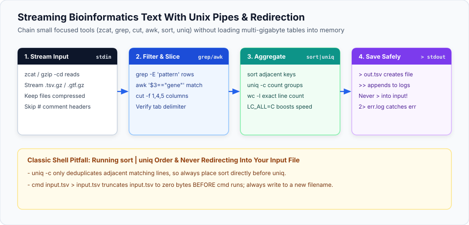
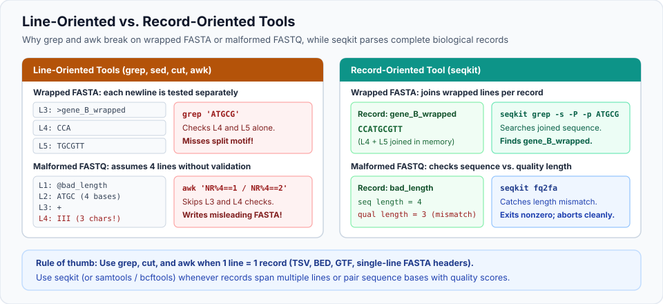

Command-Line Text Processing for Bioinformatics
Nasir Mahmood Abbasi, PhD
Bioinformatics Educator
Sequencing reads (FASTQ), reference sequences (FASTA), and count tables (TSV) are often gigabytes of plain text that stall spreadsheets and waste RAM if loaded whole. Learn how to inspect, filter, and summarize them in a Bash terminal with standard Unix tools and seqkit, and how to tell when line-by-line commands silently break.
Format: Hands-on lab (about 20-25 minutes). Generate five small invented test files in a disposable directory (a gene-count TSV, an ID list, a wrapped FASTA, a valid FASTQ, and a malformed FASTQ) and compare streaming Unix pipes against record-aware seqkit commands.
What you will learn and prerequisites
Prerequisites: Basic directory navigation (pwd, cd, ls, head) from Command-Line Navigation for Bioinformatics, and a Bash terminal on Linux, macOS, or Windows Subsystem for Linux (WSL). You do not need R, Python, Scanpy or Seurat for this lesson: standard Unix utilities handle the table tasks, and seqkit handles multi-line sequence records.
By the end of this lab, you will be able to:
- Stream and reshape tab-delimited tables using
grep(global regular expression print),sed(stream editor),cut,awk,sort, anduniq. - Read compressed sequencing files safely with
gzip -dcorseqkitwithout unpacking multi-gigabyte archives onto disk. - Distinguish line-oriented formats (one row per record, such as TSV) from multi-line sequence records (wrapped FASTA and four-line FASTQ) so you pick the right tool before filtering.
- Write outputs atomically with temporary files so a failed command never publishes a truncated file.
| Format | Record layout | Main line-tool pitfall | Recommended tool |
|---|---|---|---|
| TSV / BED / GTF | 1 line = 1 row, columns separated by tabs (\t) | Non-numeric text such as NA can pass naive > checks in awk; grep -F -f matches substrings | cut, awk -F'\t', LC_ALL=C sort |
| FASTA | 1 header line starting with >, followed by 1 or more wrapped sequence lines (often 60-80 bases per line) | Line-based grep misses motifs split across a line wrap and loses the header line | grep -c '^>' for header counts only; seqkit for sequence searches and stats |
| FASTQ | 4 coupled lines per read: @header, sequence, +, and Phred quality scores of equal length | awk 'NR%4==...' skips quality-length checks and breaks if a sequence wraps | seqkit (stats, fq2fa, sana) |

stdout) of one command directly into standard input (stdin) of the next, processing multi-gigabyte tables line by line with minimal RAM.Setup checkpoint before the exercise
Run this readiness check in a Bash terminal (Linux, macOS, or WSL rather than native PowerShell or an R/Python console). It tests each required command in a subshell and stops at the first missing tool without closing your terminal.
(
for tool in awk cut sort uniq grep sed seqkit; do
command -v "$tool" || { printf 'Missing tool: %s\n' "$tool" >&2; exit 1; }
done
seqkit version
)If every utility resolves and a seqkit version prints (for example seqkit v2.14.0), skip the installation block below and jump straight to creating the practice files. Note that the TSV table exercises (Steps 6 and 7) only need the standard shell utilities, so you can run those even before installing seqkit.
Need SeqKit? Expand Micromamba installation steps
First check whether micromamba is already installed:
command -v micromamba && micromamba --versionIf it is not found, follow Install Micromamba and verify the executable and then return here (you do not need that lesson's QC environment or R/Python examples). On a managed workstation or cluster, use your institution's module system or approved installer instead.
Load the Micromamba Bash hook for your current shell session (this does not edit your startup files):
hook="$(micromamba shell hook --shell bash)" && eval "$hook"Create a dedicated cli-sequences environment containing only seqkit (do not install extra tools into an existing analysis environment; if cli-sequences already exists, skip straight to activation):
micromamba create -n cli-sequences --override-channels -c conda-forge -c bioconda --channel-priority strict seqkitActivate the environment and verify that the binary inside cli-sequences responds:
micromamba activate cli-sequences &&
command -v seqkit &&
seqkit versionIn a new terminal session later, run the shell hook and activation commands again rather than recreating the environment. If package solving stalls, inspect channel priority or platform support in the Micromamba installation guide and Bioconda documentation.
Build the five practice files
Start in a fresh working folder rather than a directory with research files. The commands below write five small invented fixtures (not biological observations): a four-row gene-count table (data.tsv), a target ID list (genes_of_interest.txt), a wrapped FASTA (sequences.fasta) where one motif crosses a line break, a valid FASTQ (reads.fastq), and a broken FASTQ (malformed.fastq) with four bases but only three quality characters.
If you rerun setup while already inside cli-part2-practice, first run cd .. to return to its parent directory and check pwd; otherwise the setup creates a nested practice directory. You can also download the identical files individually: FASTA, valid FASTQ, malformed FASTQ, TSV, and ID list.
mkdir -p cli-part2-practice
cd cli-part2-practice
printf 'gene_id\tsample\tcount\nGENE_A\tS1\t120\nGENE_B\tS1\t45\nGENE_A\tS2\t90\nGENE_C\tS2\t200\n' > data.tsv
printf 'GENE_A\nGENE_C\n' > genes_of_interest.txt
cat > sequences.fasta <<'FASTA'
>gene_A_unwrapped forward_motif
ATGCGTAA
>gene_B_wrapped split_motif
CCA
TGCGTT
>gene_C_negative no_forward_motif
TTTTAAAA
FASTA
cat > reads.fastq <<'FASTQ'
@read_1
ATGCGTAA
+
IIIIIIII
@read_2
CCATGCGT
+
IIIIIIII
FASTQ
cat > malformed.fastq <<'BAD_FASTQ'
@bad_length
ATGC
+
III
BAD_FASTQ
head -n 2 data.tsv
Expected output from head -n 2 data.tsv:
gene_id sample count
GENE_A S1 120
Why line-oriented tools break on multi-line records
Standard Unix utilities (grep, sed, cut, sort, uniq, and default awk) treat each newline character (\n) as a record boundary. That works cleanly for TSV, BED, or GTF files where every row is self-contained, but breaks down when a biological record spans multiple lines.

seqkit reconstruct full FASTA sequences and verify that FASTQ sequence and quality strings match in length.Part A: Inspect and process FASTA and FASTQ files
1) Inspect layout before filtering
Why: Before writing any extraction command, check whether headers start with > (FASTA) or @ (FASTQ), whether sequences wrap onto multiple lines, and whether fields are separated by tabs or spaces.
# Show the first 40 lines of a FASTA to check header and wrap behavior
head -n 40 sequences.fasta
# View the file interactively (use q to quit)
less sequences.fasta
Expected output from head -n 40 sequences.fasta:
>gene_A_unwrapped forward_motif
ATGCGTAA
>gene_B_wrapped split_motif
CCA
TGCGTT
>gene_C_negative no_forward_motif
TTTTAAAA
Notice that gene_B_wrapped has two sequence lines (CCA and TGCGTT) belonging to a single record, not two separate sequences.
Compressed real-world files: Real FASTQ and annotation files usually end in .gz. Stream them without decompressing to disk using gzip -dc reads.fastq.gz | head -n 8 (unlike zcat, which expects a .Z suffix on macOS unless you use gzcat, gzip -dc works identically on Linux and macOS). seqkit reads .gz, .xz, and .zst files directly with no wrapper pipe.
2) Count sequence records and check for duplicate IDs
Why: Counting records quickly verifies whether a download or filter returned the expected number of sequences. Because every FASTA record has one > header line regardless of sequence wrapping, counting lines that start with > is a valid fast proxy for record count.
# Count FASTA headers (sequences.fasta -> counts to stdout)
grep -c '^>' sequences.fasta
Expected output: 3. The ^ anchor ensures grep matches > only at the start of a line, and -c prints the line count instead of the lines themselves.
For a full summary including total bases, min/average/max length, and format validation (for either FASTA or FASTQ, plain or .gz), use seqkit stats:
# Requires seqkit installed; replace path or install in your environment
seqkit stats sequences.fasta
Example output (illustrative):
file format type num_seqs sum_len min_len avg_len max_len
sequences.fasta FASTA DNA 3 25 8 8.3 9
Add -a (--all) for N50, GC%, Q20%, and Q30% (FASTQ), and -T for tab-delimited output ready for scripts.
3) Extract and clean FASTA headers
Why: Downstream ID lookups often need bare sequence identifiers without the leading > symbol.
# Extract header lines and remove the leading '>'
grep '^>' sequences.fasta | sed 's/^>//' > headers.txt
# Output: headers.txt contains one header per line (header text only)
Expected contents of headers.txt:
gene_A_unwrapped forward_motif
gene_B_wrapped split_motif
gene_C_negative no_forward_motif
To check for duplicate accession IDs (the first space-delimited token), sort before calling uniq -d: cut -d' ' -f1 headers.txt | LC_ALL=C sort | uniq -d (empty output with exit status 0 means all IDs are unique).
4) Compare a line-based motif search against a record-aware search
Predict before running: Read sequences.fasta above. Two records contain the motif ATGCG (gene_A_unwrapped and gene_B_wrapped, where CCA + TGCGTT forms CCATGCGTT). Will grep find both records?
# Line search: includes the following line, not the preceding record header
# The next line may actually be the NEXT record's header.
grep -n -A 1 'ATGCG' sequences.fasta > matching_lines.txt
# Record search: join wrapped sequence lines and search only the forward strand
seqkit grep -s -P -p 'ATGCG' sequences.fasta > matching_records.fasta
seqkit seq -n -i matching_records.fasta
Expected outputs:
matching_lines.txt(fromgrep -n -A 1):
2:ATGCGTAA
3->gene_B_wrapped split_motif
Line 2 matched, and line 3 (marked with-by-A 1) is actually the next record's header, notgene_A_unwrapped. Meanwhile,gene_B_wrapped's split motif was missed completely.seqkit seq -n -i matching_records.fasta:
gene_A_unwrapped
gene_B_wrapped
Here -s searches sequence content instead of headers, -P restricts matching to the positive (forward) strand (since SeqKit v2.0.0, -s searches both strands by default), -n prints header names only, and -i strips everything after the first whitespace to return bare IDs.
5) Convert FASTQ safely, and catch malformed records
Why: A FASTQ record packs four lines together: @ID, sequence bases, +, and ASCII Phred quality scores (one character per base). A quick awk modulo-4 shortcut can extract headers and bases on a known clean file, but it is not a validator and silently outputs plausible-looking FASTA from corrupted reads.
# Demonstration ONLY for the supplied valid four-line teaching fixture
awk 'NR%4==1{printf ">%s\n", substr($0,2)} NR%4==2{print}' reads.fastq > reads.toy.fasta
Expected contents of reads.toy.fasta:
>read_1
ATGCGTAA
>read_2
CCATGCGT
Notice what awk does: NR % 4 == 1 prints lines 1, 5, 9... with @ replaced by > (substr($0,2) drops character 1), and NR % 4 == 2 prints lines 2, 6, 10... It never inspects line 3 (+) or compares line 2 and line 4 lengths.
For real FASTQ files, use seqkit fq2fa and write atomically through a temporary file so the final output is published only after a successful exit. That prevents downstream tools from reading a half-written file if parsing aborts partway through:
# Run in a child Bash shell so a parse failure stops before publishing output.
bash <<'BASH'
set -euo pipefail
input=reads.fastq
output=reads.checked.fasta
tmp=$(mktemp "${output}.tmp.XXXXXX")
trap 'rm -f "$tmp"' EXIT
seqkit fq2fa "$input" > "$tmp"
mv "$tmp" "$output"
BASH
On the valid reads.fastq fixture, reads.checked.fasta matches reads.toy.fasta byte for byte. Quality scores are intentionally discarded when converting to FASTA; keep the original FASTQ for alignment or QC.
Test the failure case on malformed.fastq: malformed.fastq has 4 bases (ATGC) and only 3 quality characters (III). Compare how awk and seqkit fq2fa react:
# This creates plausible-looking FASTA even though the supplied FASTQ is broken.
# It is a counterexample, NOT a conversion method for unknown inputs.
awk 'NR%4==1{printf ">%s\n", substr($0,2)} NR%4==2{print}' malformed.fastq > misleading.fasta
# The record-aware parser must reject this malformed fixture.
if seqkit fq2fa malformed.fastq > rejected.fasta.tmp; then
rm -f rejected.fasta.tmp
printf 'Unexpected acceptance: stop and inspect the parser/input.\n' >&2
false
else
rm -f rejected.fasta.tmp
printf 'Rejected the malformed FASTQ as expected.\n'
fi
Expected result: misleading.fasta silently receives >bad_length and ATGC with exit code 0, whereas seqkit fq2fa prints a format error, exits nonzero, cleans up rejected.fasta.tmp, and prints Rejected the malformed FASTQ as expected. (If you ever need to repair or inspect broken FASTQ files in real pipelines, see seqkit sana in the SeqKit docs.)
Part B: Filter and summarize tab-delimited tables
For TSV files (differential expression results, gene-count matrices, GTF/BED annotations), each line is one independent record, so streaming line tools are both fast and safe.
Quick AWK primer for Steps 6 and 7: awk reads one line at a time and runs condition { action } rules:
-F'\t'splits fields strictly on tabs (default AWK splits on runs of spaces or tabs, which breaks columns containing spaces).$0is the whole line,$1is column 1,$3is column 3, and$NFis the last column.NRis the cumulative line counter across input files (NR > 1skips a single-line header).FILENAME == ARGV[1]tests whetherawkis currently reading the first input file. UsingFILENAME == ARGV[1]instead ofNR == FNRstays safe even when the first file (your ID list) is empty.
6) Select columns, filter counts, and tally frequencies
# Show header and first 5 rows (safe inspection)
head -n 6 data.tsv
# Extract columns 1 and 3 to a new file (tab-delimited)
cut -f 1,3 data.tsv > col1_col3.tsv
# Output: col1_col3.tsv contains only columns 1 and 3
# Filter rows where column 3 (count) > 100 (assumes header present)
# This keeps the header and filters numeric rows
(head -n1 data.tsv && awk -F'\t' 'NR>1 && $3>100' data.tsv) > filtered_counts.tsv
# Output: filtered_counts.tsv with header plus rows where col3 > 100
# Count column-1 values (excluding the header); the first line must be a header
cut -f1 data.tsv | tail -n +2 | sort | uniq -c | sort -k1,1nr > gene_counts.txt
# Output: column-1 value frequencies in descending count order (ties are not explicitly ordered)
Expected outputs:
col1_col3.tsvkeepsgene_idandcountacross all 5 lines.filtered_counts.tsv:
gene_id sample count
GENE_A S1 120
GENE_C S2 200gene_counts.txt:
2 GENE_A
1 GENE_B
1 GENE_C
Because uniq -c only counts adjacent duplicates, sort must run directly before uniq -c. Prefixing LC_ALL=C sort forces predictable ASCII byte ordering and speeds up large tables.
7) Extract rows for a list of gene IDs
Why: Subsetting a count matrix by a gene panel is one of the most common shell tasks, and one of the easiest to get slightly wrong with grep.
# genes_of_interest.txt contains gene IDs, one per line
# Fixed-string substring search across each entire line; not a column-exact match
grep -F -f genes_of_interest.txt data.tsv > genes_subset_grep.tsv
# Exact match against column 1; FILENAME test also works for an empty ID list
awk -F'\t' 'FILENAME == ARGV[1] {a[$1]=1; next} ($1 in a)' genes_of_interest.txt data.tsv > genes_subset.tsv
# Output: three matching data rows; empty if there are no matches
Expected contents of genes_subset.tsv:
GENE_A S1 120
GENE_A S2 90
GENE_C S2 200
Both outputs intentionally omit the header row; prepend head -n 1 data.tsv when you need headers preserved. Notice why awk is safer than grep -F -f on real data: grep -F -f matches anywhere in the line as a substring (so TP53 also pulls in TP53BP1, and an accidental blank line in the ID list matches every row in the table), whereas ($1 in a) performs an exact hash lookup on column 1 in linear time.
Decision guide: which tool fits the job?
| Task | Best tool | Why |
|---|---|---|
| Quick preview, line/header count, column slicing, exact ID lookup in TSV/BED/GTF | head, gzip -dc, cut, awk, LC_ALL=C sort | Streams line by line with minimal memory and zero startup overhead |
| FASTA/FASTQ stats, motif grep across wrapped lines, length/GC filtering, paired-read sync, format conversion | seqkit | Record-aware, reads .gz natively, checks quality lengths, multithreaded |
| Aligned reads (BAM/CRAM) or variant calls (VCF/BCF) | samtools, bcftools | Binary and indexed formats cannot be parsed with plain-text tools |
| Multi-table joins, statistical tests, differential expression, plots | R (tidyverse / Bioconductor) or Python (pandas) | Rich data types, missing-value handling, and reproducible modeling |
Common mistakes and how to fix them
- Truncating your input file with
>: Runningawk '...' data.tsv > data.tsvemptiesdata.tsvbeforeawkreads a single byte. Fix: Always redirect to a new filename or write to a temporary file first and rename on success. grepreturns zero hits or misses wrapped motifs: Case mismatch, shell-expanded characters ($,*), or a motif split across wrapped FASTA lines. Fix: Use single quotes around patterns,-ifor case-insensitive matching,-Ffor literal strings, andseqkit grep -sfor wrapped sequences.cutreturns the whole line or wrong columns: File uses spaces or commas instead of tabs, or header has trailing spaces. Fix: Inspect whitespace portably across Linux and macOS withhead -n 5 file | cat -vet(tabs appear as^I, Windows CRLF endings appear as^M$, and each line ends with$). Pass-d','tocut, or normalize line 1 portably across GNU and macOS/BSDsedwithsed '1s/^[[:space:]]*//; 1s/[[:space:]]*$//' file.- Windows CRLF (
\r\n) breaks exact ID matching: A trailing\rongenes_of_interest.txtcauses($1 in a)to fail silently because"GENE_A\r" != "GENE_A". Fix: Strip carriage returns withtr -d '\r' < win.txt > unix.txtordos2unix. sortruns slowly or fills/tmpon multi-gigabyte tables: Locale collation is slow and/tmpis often small on HPC login/compute nodes. Fix: Create the scratch directory first (or point-Tto an existing scratch folder):mkdir -p ./tmp_sort && LC_ALL=C sort -S 2G -T ./tmp_sort big.tsv > big.sorted.tsv.
Try a variation and check your reasoning
- In Step 4, change the forward-strand motif from
ATGCGtoTTTT. Predict which FASTA ID will match before runningseqkit grep -s -P -p 'TTTT' sequences.fasta | seqkit seq -n -i. - Repeat the atomic conversion block from Step 5 in a fresh directory with
input=malformed.fastqandoutput=must-not-publish.fasta. Predict the exit status and whethermust-not-publish.fastashould exist. - In the
awknumeric-guard snippet (Step 6), predict what happens if you remove$2 ~ /^[0-9]+$/ &&whenGENE_Xhas countNA.
Compare your reasoning
1. TTTT selects only gene_C_negative; its name indicates no hit for the original ATGCG motif, not a biological negative control.
2. seqkit fq2fa exits nonzero, set -euo pipefail stops before mv, and the EXIT trap removes the temporary file, leaving no must-not-publish.fasta.
3. Without the regex check, AWK compares "NA" > 100 as strings and prints GENE_X NA alongside GENE_Z 200.
Summary and next steps
- Use
head,gzip -dc,cut,awk -F'\t',LC_ALL=C sort, anduniqwhen one line equals one record. - Switch to
seqkitwhenever sequences wrap across lines or couple bases with Phred quality scores, and write outputs atomically through temporary files. - Next in the Foundations track: learn isolated software environments in Micromamba Environments for Bioinformatics, inspect sequencing quality metrics in Quality Control Fundamentals, or analyze count tables in R and Tidyverse Fundamentals and Python Fundamentals for Bioinformatics.
Checked environment and scope: The table filtering, exact ID matching, wrapped-motif comparison, valid FASTQ conversion, malformed-record rejection, and temp-file cleanup commands were verified on the five invented teaching fixtures under Ubuntu Linux x86_64 with Bash 5.2.21, mawk 1.3.4 (20240123), GNU grep 3.11, GNU Coreutils 9.4, and SeqKit 2.14.0 (and the Micromamba 2.9.0 setup commands were verified in a fresh environment root on the same platform). Performance on large datasets, biological conclusions, and other operating systems were not tested here.
References
- GNU grep manual: regular expressions, fixed-string matching (
-F), and context options. - GNU sed manual: stream editor addressing, substitutions, and POSIX character classes.
- GNU Awk (gawk) manual: field splitting, array lookups, and string-versus-number comparison rules.
- GNU Coreutils manual (cut, sort, uniq, head, tail): standard text-processing utilities and locale sorting behavior.
- SeqKit usage documentation: record-aware FASTA/Q manipulation, strand flags (
-P),stats,fq2fa, andsana. - NCBI GenBank FASTA format specification: definition-line identifiers and sequence wrapping conventions.
Software and package behaviour can change. Please re-check commands against the official documentation. If a command does not work, you find an error, or the tutorial is no longer reproducible, please report it through the Contact page
Author: Nasir Mahmood Abbasi, PhD - Category: Shell Command Basics